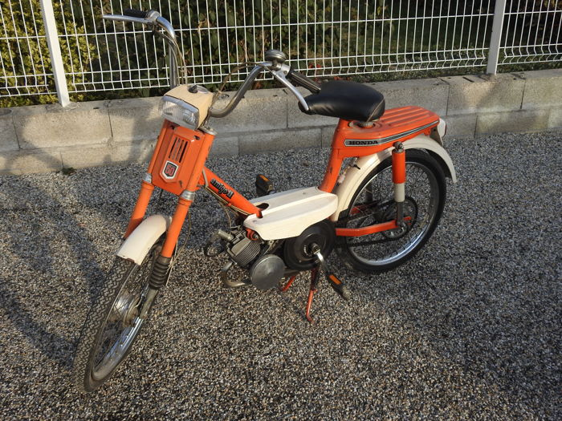
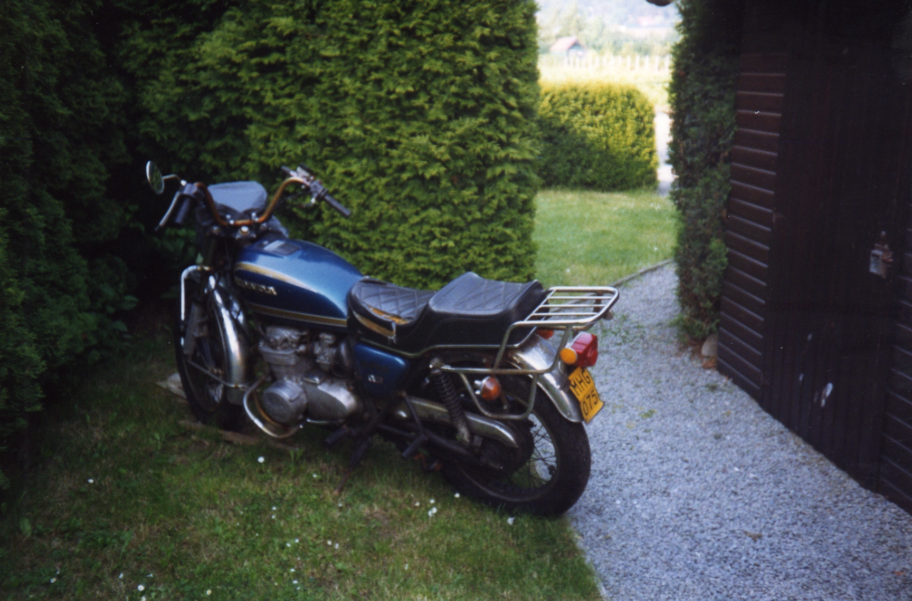
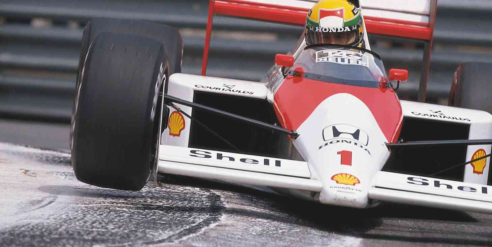

Engines
I'm interested in motors and motorized sports since I was a teenager. For a long time my motorbikes where my main transportation. When I started working I switched to cars but I kept following my favourite motorsports until 1994.
My first engine
This is my Honda Amigo before I painted it black.
My Honda CB550F
This was my trusted means of transportation until 1992.
My F1 hero until 1994
I watched almost all races with Ayrton Senna and drivers of his generation like Thierry Boutsen and Gerhard Berger.
